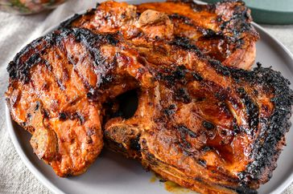

Smokey Grilled Pork Chops

Home
These tasty grilled pork chops are flavored with an easy homemade seasoning rub for a spicy, smoky flavor. They're quick to prep and always a favorite at BBQ parties.
- 1 tablespoon seasoned salt (such as Lawry's)
- 1 tablespoon garlic powder
- 1 tablespoon onion powder
- 1 tablespoon ground paprika
- 2 teaspoons Worcestershire sauce
- 1 teaspoon ground black pepper
- 1 teaspoon liquid smoke flavoring
- 4 bone-in pork chops (½- to ¾-inch thick)